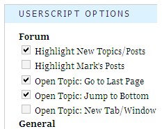

This is a userscript for Mark Forster's website, markforster.net. It remedies some annoyances and adds some missing functionality, especially regarding the discussion forum.
Content
How to Install
Firefox
To install userscripts in Firefox, you need to install the Greasemonkey extension. If you have Greasemonkey installed, you just need to click on the “get the script” link at the top or bottom of this page. Greasemonkey will ask you if you want to install the userscript. Click on “Install” and you're done.
Chrome
To use userscripts in Chrome, you need to be on version 4.x (beta) or 5.x (developer). Then it's as simple as clicking on the “get the script” link at the top or bottom of this page. Chrome will show a toolbar at the bottom and ask you if you want to install the userscript as an extension. Click on “Continue” and you're done.Opera
In Opera, you need to enable support for userscripts first. To do this, select “Tools” → “Preferences” from the menu. Select the tab “Advanced” and click on “Content”. Then click on the button “JavaScript Options”. In the next dialog, you need to select a folder on your hard drive to use as the “User JavaScript folder”. Click “OK” until you're back on the website. Now right-click the “get the script” link at the top or bottom of this page and select “Save Linked Content As ...”. Save the script in the folder you selected previously and you're done.Features
Options Menu
All features of this script can be activated and deactivated separately using the userscript options box that is added at the bottom of the left sidebar.
Checking and unchecking the checkboxes changes the behaviour or look of the page immediately without reload.
Highlight New Topics and Posts
This is a very useful feature, that highlights new topics and posts with a bright yellow color. There are two aspects of this script: highlighting topics with new posts on the forum main page and highlighting new posts in the topic view.
Currently, there is no concept of read/unread tasks. When the forum main page is loaded, all topics that have posts that have been added since the main page was loaded the last time are highlighted. This means that if you reload the main page after highlighting was applied, no topics will be highlighted (unless new posts were added between the first and the last loading). On the other hand, when you're inside a topic, the highlight is permanent, until the timestamps were updated by reloading the main page and detecting new posts.
Highlight Mark Forster's Posts
This feature highlights all posts in the discussion forum that were written by site owner Mark Forster. This can be combined with the highlighting of new posts. New posts by Mark will be highlighted in bright green, older posts in a lighter shade of green.
Go to Last Page When Opening Topics
Once a topic has multiple topics, you need to scroll to the bottom and click on the page navigation bar to get to the last page and the newest posts. This feature brings you to the last page automatically when clicking on topcis on the forum main page.
Scroll to Bottom When Opening Topics
While on the main page, the newest topics are at the top, once you click on a topic, the newest posts are always at the bottom. Also, the navigation bar which allows moving through the pages pf a topic is at the bottom. So one of the first things many people do after clicking on a topic is pressing the “end” key, which scrolls to the bottom of the page. If you activate this feature, the script will do this for you.
Open Topics in New Tabs/Windows
If you activate this feature, clicking on topics on the forum main page will open them in new windows or tabs (if the browser supports it). This is useful to avoid losing the highlighting of new topics on the forum main page.
Block Esc Key From Forwarding to Login Screen
Pressing the “esc” key causes the website to forward you to the login screen. This is a useless function, since the only person who can login using this logon screen is Mark Forster himself. And if you have the habit of closing dialogs or the search bar by pressing the esc key, you'll involuntarily trigger this. If you activate this feature, pressing the esc key will no longer have any effect.
Version History
2010-02-20 – Version 1
- Highlight New Topics and Posts
- Highlight Mark Forster's Posts
- Go to Last Page When Opening Topics
- Scroll to Bottom When Opening Topics
- Open Topics in New Tabs/Windows
- Block Esc Key From Forwarding to Login Screen